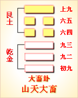

第二十六卦初九爻详解 第二十六卦九二爻详解 第二十六卦九三爻详解
第二十六卦六四爻详解 第二十六卦六五爻详解 第二十六卦上九爻详解
周易第二十六卦 大畜 山天大畜 艮上乾下
大畜：利贞，不家食吉，利涉大川。
彖曰：大畜，刚健笃实辉光，日新其德，刚上而尚贤。能止健，大正也。不家食吉，养贤也。利涉大川，应乎天也。
象曰：天在山中，大畜;君子以多识前言往行，以畜其德。
初九：有厉利已。象曰：有 厉利已，不犯灾也。
九二：舆说辐。象曰：舆说辐，中无尤也。
九三：良马逐，利艰贞。曰闲舆卫，利有攸往。象曰：利有攸往，上合志也。
六四：童豕之牿，元吉。象曰：六四元吉，有喜也。
六五：豶豕之牙，吉。象曰：六五之吉，有庆也。
上九：何天之衢，亨。象曰：何天之衢，道大行也。
大畜卦卦象，山天大畜卦的象征意义
大畜卦，此卦是异卦相叠，乾在下，艮在上。乾为天，刚健;艮为山，笃实。畜者积聚，有积蓄和停止两种含义。大畜意为大积蓄。
大畜卦卦象大蓄启示
人们止而不止的人生哲理。虽然看似停止了，不再前行，但是此时要积极地蓄积知识和力量。告诫人们要不畏艰难险阻，努力修身养性以丰富德业。
大蓄卦与小蓄卦都有蓄养的意思，其不同的是，小畜的卦象是“”，是以孤阴畜止群阳，阳盛而阴衰，一个阴爻养五个阳爻，力量不足，不得不暂时停顿，积蓄力量。由此喻指处于乱世的贤能之士生不逢时，只好消极隐退，畜德积学，独善其身。大畜则不同，大畜象征大量的畜养积聚，如同大山蕴藏天下万物，所畜至为广大，喻指治世的明君要畜养贤士，利用人才来成就大业。
大畜卦位于无妄卦之后，《序卦》之中说道：“有无妄然后可畜，故受之以大畜。”不虚妄是真诚而实在的，由此培养内涵，然后可以大有积蓄。
《象》对此卦的解释是：天在山中，大畜;君子以多识前言往行，以畜其德。
《象》中指出大畜卦的卦象是乾(天)下艮(山)上，为天被包含在山里之表象，象征大量的畜养积聚;君子效法这一精神，应当努力更多地学习领会前代圣人君子的言论和行为，以此充实自己，培养美好的品德和积聚广博的知识。大畜卦启示了止而不止的道理，属于中上卦。《象》中这样来断此卦：忧愁常锁两眉头，千头万绪挂心间，从今以后防开阵，任意行而不相干。
此卦卦名为大畜。前面我们讲过小畜，大畜的意思与小畜意思相近，只是大与小的区别。《序卦传》中说：“有无妄然后可畜，故受之以大畜。”也就是人们行为都不妄为，思想都不妄想，社会财富就可以得到大的积蓄，所以在无妄卦的后面是大畜卦。大畜卦所表示的时代，比小畜的时代更加富裕。人们都拥有更多的家畜，有更多的奴彳卜，柴米油粮都有过盛的富余。另外，人们都富足了，就会安于现状，停滞不前，所以大畜也有大的畜止的含义。
大畜卦的卦画是四个阴爻两个阳爻，与无妄卦的排列顺序正好相反。
从卦象上分析，大畜卦上卦为艮为山，下卦为乾为天，天在山中便是大畜卦的卦象。天本来比山要大得多，可是山竟然把大畜卦之象
一鹿一马，主禄马如意;月下有文书，明且贵之义;官人凭栏，乃清闲且贵;栏内苍发茂盛，乃西液判苍之积，最利求,是龙潜大壑之卦，积小成大之象。
天装了起来，可见积蓄有多大。虽然有些夸张，但却很形象地表现了人们财物积蓄之巨。这就相当于中国的文景之治时期，或者开元盛世时的情景。
关键词：周易,大畜卦,山天大畜,艮上乾下
大畜卦：吉利的占卜。不在家里吃饭，吉利。有利于渡过大江大河。
初九：有危险，有利于祭祀神鬼。
九二：车上的车轮脱掉了。
九三：良马交配繁殖。占问旱灾得到吉兆。每天练习车战防卫。有利于出门行旅。
六四：用木架架住公牛的角，大吉大利。
六五：用围栏圈住奔突的大猪，吉利。
上九：得到上天的福枯，大吉大利。
①大畜是本卦的作题。畜的意思是聚积，大畜就是积蓄很多。全卦内容与农业和畜牧业有关。
②不家食：不在家里吃饭。
③巳：用作 “祀”，祭祀。
④说：用作“脱”。輹：用作“辐”，这里指车轮。
⑤ 逐：交配。马在交配时要奔跑追逐。
(6)闲：用作“娴”，意思是熟练，熟 悉。舆卫：车战中的防卫。
(7)童牛:犝牛，即公牛。牯(gu)：牛角上的 木架。
(8)豮(fen)豕:奔突的大猪。牙：用作“互”，意思是猪栏。
(9)何;用作“荷”，意思是承受。衢：福禄。